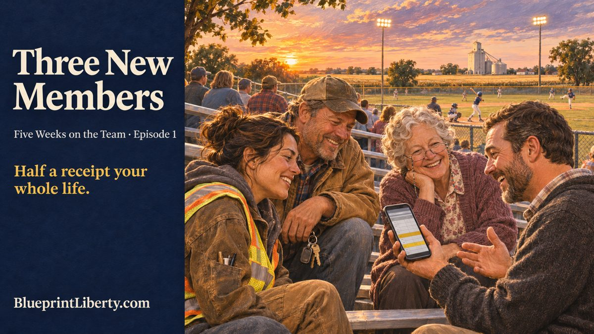

← Runtime Republic · Five Weeks on the Team
Five Weeks on the Team · Episode 1 of 10 · about 7 minutes · Draft under review

Picture three people who have never met. Maria drives a forklift and gets paid every other Friday. Dale runs a two-truck lawn and snow business out of his garage. Ruth retired from teaching three years ago and lives on Social Security and a small pension. None of them would call themselves political. All three joined a Runtime Republic team on the same Sunday, after a friend showed them the app on a phone at a ball game. This is what their first five weeks looked like.
The first thing each of them noticed was how little the app asked of them. On the phone, Maria snapped a picture of her pay stub. Dale linked his business checking account and his personal one. Ruth photographed her Social Security letter and her electric bill. That was the whole first day. The app did the sorting, and it asked one question at a time, always with a few choices to tap. Was this charge groceries or household? Was this transfer to your daughter support or a loan? By Wednesday, each of them had a list of every dollar that came in and went out that week, and nothing was guessed. Anything the app could not confirm was marked unknown, never zero.
On Saturday night, each of them sat down at a desktop for the weekly close. It took Maria about twenty minutes. The deck opened on one screen: taxes first, then where the money went. Maria stared at it for a while. Her federal income tax, Social Security and Medicare were all taken before her check ever reached her. Then she opened the box labeled "Not on your stub" and saw the employer's half of Social Security and Medicare, the same amount again, paid for her work and never shown to her. She told her team the next day that she felt like she had been reading half a receipt her whole life.
Dale's first close took longer, and he did not enjoy it. As a self-employed man, he pays both halves of Social Security and Medicare himself, figures his own quarterly estimates, and keeps records for a preparer. The deck put a line on his screen that no one had ever shown him: the cost of complying. Hours spent on records, the preparer's fee, the software. It was not a tax, but it was a cost of the tax, and it went to no one. Dale said it was the first time a screen had agreed with him.
Ruth's close was the shortest. Her income arrived without much withholding, so she expected her tax list to be short. Instead, the app found taxes and fees she had never counted: inside her electric bill, on her phone bill, in her car registration, and in the property tax folded into her rent. Her count of governments that took something from her that week came to seven.
On Sunday, each of them sent a team packet by two in the afternoon. The packet carries no names, no addresses, no account numbers and no dollar amounts. It carries a call sign, percentages and process checks. Maria, Dale and Ruth never saw each other's money. They saw each other's progress. By midnight, every team member had reviewed every packet, and the team standings ranked them only on process: did you close the week, did your checks pass, did you post on time. Before each of them pressed post, the app showed every field going out, in plain words, and sealed the week's folder with a single hashmark. If anything in that folder changed later, the app would know.
Week two is where the team started to feel like a team. Each person's demo partner in the app lived through a new life event that week, and so did real life. Maria got a raise and watched her withholding jump more than she expected. Dale hired his first part-time helper and discovered that one hire meant new forms, new deposits and a new layer of compliance cost. Ruth turned sixty-five and opened her Medicare letters with the app beside her, one step at a time. Each event came with a card: what changes now, what would change under the replacement plan, who to contact, and which control it teaches.
In week three, they learned the difference that changed how they talked about taxes. An existence tax takes property because you have it or earn it: income tax, payroll tax, property tax. An event tax only rides on a market event, like a purchase. Maria's Paycheck tab showed her check today next to the same check under the federal replacement plan, where the federal taxes come off the paycheck and show up instead on every receipt, with a monthly prebate credited at the start of each month. The app labeled every assumption, including the chance that prices would not fall. Nobody was told what to think. They were shown both columns.
Week four was contact week. Each of them tapped the names in the "Who sets these taxes" strip: their U.S. representative, both senators, their state senator and representative, the governor, and for Ruth, the county and school board members whose levies sat inside her rent. The app drafted a short, respectful letter for each office, asking the same four questions: where does this tax go, what budget line does it pay, who was paid, and how are results measured. They sent their letters themselves. The app only logged them. Maria earned her first Civic Encounter level that week, and a teammate, not the app, confirmed it.
By week five, the workshop had them. Dale found a gap: the self-employment tax rules were the reason his compliance cost was so high, and the score for that tax against the control documents was low. The app did not hand him a fix. It asked him for his idea first and recorded it as his. Two other team members offered competing fixes, and an AI offered one too. The team scored all of them against the same rules, and Dale's won, not because it passed but because it was better. Ruth, after her fifth close, said the strangest thing to her team: she was no longer angry about taxes. She was curious.
None of this made their budgets bigger in five weeks. What changed was what they could see. Maria could see her whole paycheck. Dale could see what complying cost him. Ruth could see every government that touched her life. Each of them could see who sets each tax and how to reach them, and each of them belonged to a team that checked its work every Sunday. That is the point of the system: not a perfect government, but a better one, built one visible dollar and one honest week at a time.